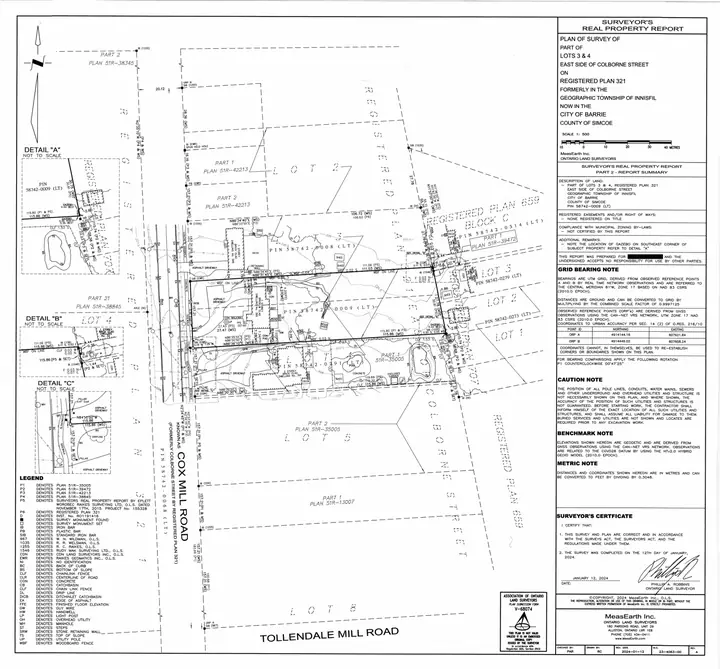
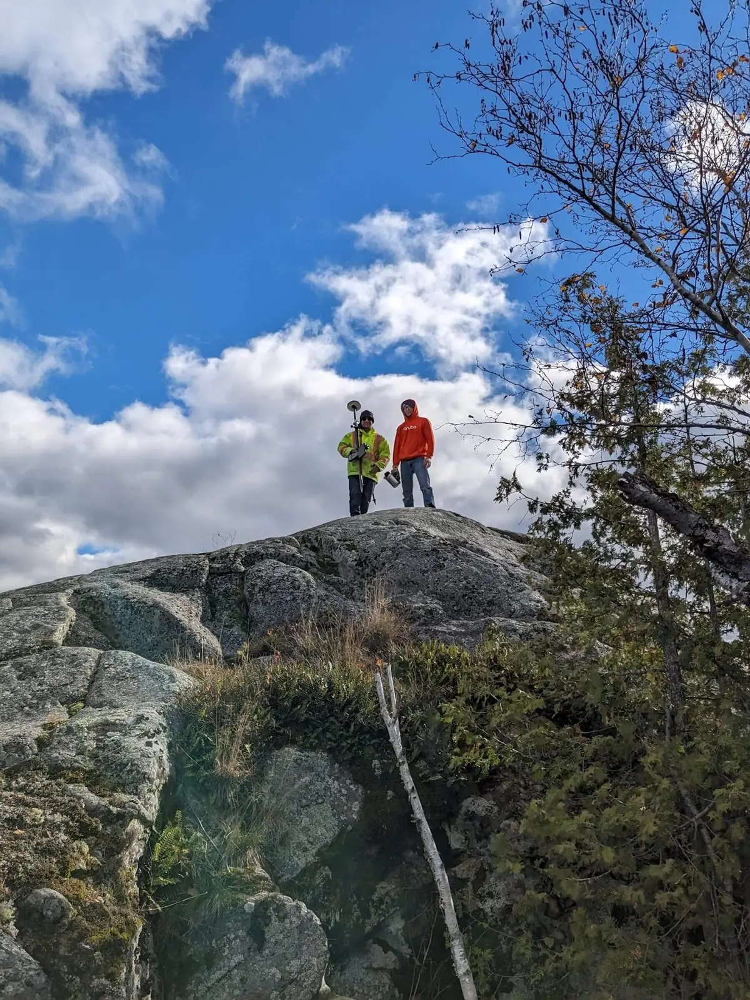

When you need it
Buying, selling, financing or building
- You are buying a property and want to know exactly what you are getting
- Your lender or lawyer has asked for an up-to-date survey
- You are selling and want to answer boundary questions before they delay closing
- You are applying for a permit for an addition, garage, pool or deck
- You suspect a fence, shed or driveway is over the line
What you receive
A signed plan and a written report
- A plan showing the boundaries with their dimensions and the survey monuments found or set
- The location of buildings and structures, with distances to the lot lines
- Easements and rights-of-way registered on title
- Fences, encroachments and other features that affect the boundary
- A written report with our findings, signed by an Ontario Land Surveyor
- A PDF copy, and paper copies on request


A MeasEarth Surveyor's Real Property Report. Select to enlarge.
Good to know
What sets the fee
Every SRPR starts with research: the registered plans, deeds and earlier surveys of your lot and its neighbours. Where good survey evidence already exists, the field work is quicker.
Lot size, tree cover, shoreline, and the number of buildings all affect the time on site. We weigh these before we quote, so the fee you accept is the fee you pay.
If you also want the corners marked for a fence, ask for both at once. Doing them together costs less than two visits.
Common questions
Questions we hear most
Is an SRPR the same as a boundary survey?
An SRPR includes the boundary survey and adds the buildings, easements and a written report. If you only need the line marked on the ground, boundary staking is the simpler option.
Will you mark the corners?
The SRPR records the monuments at the corners. If any are missing we replace them. If you want the lines between the corners staked as well, tell us when you ask for the quote.
Can I use the previous owner's survey?
It is a useful starting point, and you should send it to us. It will not show changes since it was made, and lenders and municipalities often ask for a current one.
Related
Often needed with this
Boundary survey and staking
Corners found or set and the line marked on the ground, before you build a fence, driveway or wall.
Severances and reference plans
Reference plans for severances, lot additions, easements and shore road allowances, deposited at the Land Registry Office.
Easement, property and title reports
Easement reports, property reports and chain of title analysis: what the documents say about your land, in plain language.
Request a quote
Get a fixed-fee quote for your SRPR
Tell us the property address and what you are planning. We reply with a written, fixed-fee proposal, so you know the price before any work starts.
- The property address or legal description
- What you are doing: buying, building, fencing, severing
- Any old survey or drawing you have (you can attach it on the contact page), and your deadline

Your project
No obligation. We use your details only to prepare the quote.
The form did not load. Please call 705 434 0411 and we will take the details by phone.